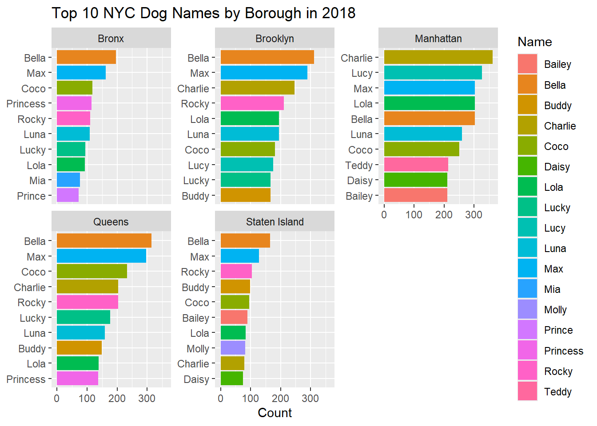

library(tidyverse)
library(tidytext)
library(ggrepel)Week 05 Problem Set: Dogs of New York
Dogs of New York
This data comes from New York City’s Open Data initiative.
We load the data as a package. If you get a message saying there’s no such package, then run this line of code at the console once: remotes::install_github("kjhealy/nycdogs"). Then it should be available.
library(nycdogs)
nyc_license# A tibble: 493,072 × 9
animal_name animal_gender animal_birth_year breed_rc borough zip_code
<chr> <chr> <dbl> <chr> <chr> <int>
1 Paige F 2014 Pit Bull (or Mi… Manhat… 10035
2 Yogi M 2010 Boxer Bronx 10465
3 Ali M 2014 Basenji Manhat… 10013
4 Queen F 2013 Akita Crossbreed Manhat… 10013
5 Lola F 2009 Maltese Manhat… 10028
6 Ian M 2006 Unknown Manhat… 10013
7 Buddy M 2008 Unknown Manhat… 10025
8 Chewbacca F 2012 Labrador (or Cr… Manhat… 10013
9 Heidi-Bo F 2007 Dachshund Smoot… Brookl… 11215
10 Massimo M 2009 Bull Dog, French Brookl… 11201
# ℹ 493,062 more rows
# ℹ 3 more variables: license_issued_date <date>, license_expired_date <date>,
# extract_year <dbl>The data are structured like this: each row contains the license record for a dog in a particular year. The columns are as follows:
animal_name — Name of dog. animal_gender — Sex of dog. animal_birth_year — Birth year breed_rc — Breed of dog (simplier categories). borough — Borough of owner. (Some boroughs are approximate due to zip codes.) zip_code — Zip code of owner. license_issued_date — Date license issued license_expired_date — Date license expired extract_year — Year record was extracted
Tasks
1. A first look at the data.
You’ll use group_by() and summarize(), or tally() to answer these questions.
- Write some code to count the number of records there are for each extract year, and how many records are missing a value for the extract year.
nyc_license |>
group_by(extract_year) |>
tally()# A tibble: 4 × 2
extract_year n
<dbl> <int>
1 2016 112719
2 2017 115637
3 2018 117371
4 NA 147345- How many distinct dog breeds are there in the data?
nyc_license |> distinct(breed_rc)# A tibble: 327 × 1 breed_rc <chr> 1 Pit Bull (or Mix) 2 Boxer 3 Basenji 4 Akita Crossbreed 5 Maltese 6 Unknown 7 Labrador (or Crossbreed) 8 Dachshund Smooth Coat 9 Bull Dog, French 10 Miniature Pinscher # ℹ 317 more rowsThere are 327 distinct breeds
- Are there any notable differences in the ratio of male to female dogs in the city as a whole? What about by borough?
nyc_license |> filter(!is.na(animal_gender)) |> group_by(animal_gender) |> tally()# A tibble: 2 × 2 animal_gender n <chr> <int> 1 F 223772 2 M 269278For the city as a whole, there are about 20% more male dogs than female dogs
nyc_license |> filter(!is.na(animal_gender) & !is.na(borough)) |> group_by(borough, animal_gender) |> tally()# A tibble: 10 × 3 # Groups: borough [5] borough animal_gender n <chr> <chr> <int> 1 Bronx F 22325 2 Bronx M 28703 3 Brooklyn F 57038 4 Brooklyn M 68670 5 Manhattan F 77869 6 Manhattan M 88980 7 Queens F 44376 8 Queens M 57142 9 Staten Island F 19932 10 Staten Island M 23300Across boroughs, the ratio of male to female dogs stays fairly consistent.
- Here are the first ten rows of the data again:
nyc_license# A tibble: 493,072 × 9
animal_name animal_gender animal_birth_year breed_rc borough zip_code
<chr> <chr> <dbl> <chr> <chr> <int>
1 Paige F 2014 Pit Bull (or Mi… Manhat… 10035
2 Yogi M 2010 Boxer Bronx 10465
3 Ali M 2014 Basenji Manhat… 10013
4 Queen F 2013 Akita Crossbreed Manhat… 10013
5 Lola F 2009 Maltese Manhat… 10028
6 Ian M 2006 Unknown Manhat… 10013
7 Buddy M 2008 Unknown Manhat… 10025
8 Chewbacca F 2012 Labrador (or Cr… Manhat… 10013
9 Heidi-Bo F 2007 Dachshund Smoot… Brookl… 11215
10 Massimo M 2009 Bull Dog, French Brookl… 11201
# ℹ 493,062 more rows
# ℹ 3 more variables: license_issued_date <date>, license_expired_date <date>,
# extract_year <dbl>Row 8 shows a Labrador named Chewbacca. Are there any other dogs in the data that have the names of major Star Wars characters?
nyc_license |>
group_by(animal_name) |>
filter(animal_name %in% c("Chewbacca", "Han", "Luke", "Leia",
"Anakin", "Padme", "Yoda", "Obi-Wan", "Ahsoka",
"Kylo", "Rey", "Poe", "Finn")) |>
tally()# A tibble: 13 × 2
animal_name n
<chr> <int>
1 Ahsoka 10
2 Anakin 43
3 Chewbacca 183
4 Finn 497
5 Han 26
6 Kylo 34
7 Leia 240
8 Luke 394
9 Obi-Wan 10
10 Padme 8
11 Poe 28
12 Rey 87
13 Yoda 198There are many, many dogs with Star Wars names.
- In class we saw some problems with the
animal_namecolumn, where there seemed to be typos and misspellings and so on. Are there any similar sorts of problems with theboroughcolumn or thezip_codecolumn? (Hint: remember we subset rows withfilter())
- In class we saw some problems with the
nyc_license |>
group_by(borough) |>
tally()# A tibble: 6 × 2
borough n
<chr> <int>
1 Bronx 51028
2 Brooklyn 125720
3 Manhattan 166849
4 Queens 101524
5 Staten Island 43236
6 <NA> 4715nyc_license |>
group_by(zip_code) |>
filter(zip_code %in% nyc_zips$zip_code) |>
tally()# A tibble: 203 × 2
zip_code n
<int> <int>
1 10001 3727
2 10002 4661
3 10003 5868
4 10004 611
5 10005 1295
6 10006 547
7 10007 962
8 10009 8190
9 10010 4474
10 10011 8622
# ℹ 193 more rows2. Some Crosstabs
- What were the Top 5 dog names in each borough in 2016?
nyc_license |>
filter(!is.na(borough) & extract_year == 2016) |>
group_by(borough, animal_name) |>
tally() |>
filter(!(animal_name %in% c("Unknown", "Name Not Provided", "Name"))) |>
slice_max(n, n = 5) |>
print(n = 25)# A tibble: 25 × 3
# Groups: borough [5]
borough animal_name n
<chr> <chr> <int>
1 Bronx Bella 170
2 Bronx Max 165
3 Bronx Rocky 136
4 Bronx Princess 130
5 Bronx Lucky 118
6 Brooklyn Max 293
7 Brooklyn Bella 291
8 Brooklyn Charlie 207
9 Brooklyn Rocky 193
10 Brooklyn Lola 192
11 Manhattan Charlie 364
12 Manhattan Lucy 340
13 Manhattan Lola 319
14 Manhattan Bella 299
15 Manhattan Max 287
16 Queens Max 308
17 Queens Bella 295
18 Queens Coco 237
19 Queens Rocky 213
20 Queens Lucky 188
21 Staten Island Bella 192
22 Staten Island Max 134
23 Staten Island Rocky 124
24 Staten Island Buddy 114
25 Staten Island Coco 98- What were the Top 5 dog breeds in the whole city in 2018, in terms of the total number of dogs?
nyc_license |> filter(extract_year == 2018 & breed_rc != "Unknown") |> group_by(breed_rc) |> tally() |> slice_max(n, n = 5)# A tibble: 5 × 2 breed_rc n <chr> <int> 1 Yorkshire Terrier 7264 2 Labrador (or Crossbreed) 6876 3 Shih Tzu 6418 4 Pit Bull (or Mix) 5956 5 Chihuahua 4976The top breeds were Yorkshire Terrier, Labrador, Shih Tzu, Pit Bull, and Chihuahua.
- What were the Top 5 dog breeds in the whole city in 2018, as a percentage of all dogs?
nyc_license |> filter(extract_year == 2018 & breed_rc != "Unknown") |> group_by(breed_rc) |> tally(sort = TRUE) |> mutate(pct = (n/sum(n))*100) |> slice_max(pct, n = 5)# A tibble: 5 × 3 breed_rc n pct <chr> <int> <dbl> 1 Yorkshire Terrier 7264 6.88 2 Labrador (or Crossbreed) 6876 6.51 3 Shih Tzu 6418 6.08 4 Pit Bull (or Mix) 5956 5.64 5 Chihuahua 4976 4.71The top 5 are the same as the top 5 breeds by count, because that is how percentages work.
- What were the Top 5 dog breeds in each borough in 2018, in terms of the total number of dogs in each borough?
nyc_license |> filter(extract_year == 2018 & !is.na(borough)) |> group_by(borough, breed_rc) |> filter(breed_rc != "Unknown") |> tally(sort = TRUE) |> slice_max(n, n = 5) |> print(n = 25)# A tibble: 25 × 3 # Groups: borough [5] borough breed_rc n <chr> <chr> <int> 1 Bronx Yorkshire Terrier 1226 2 Bronx Pit Bull (or Mix) 1140 3 Bronx Shih Tzu 961 4 Bronx Chihuahua 686 5 Bronx Labrador (or Crossbreed) 484 6 Brooklyn Yorkshire Terrier 1905 7 Brooklyn Labrador (or Crossbreed) 1831 8 Brooklyn Shih Tzu 1760 9 Brooklyn Pit Bull (or Mix) 1746 10 Brooklyn Chihuahua 1301 11 Manhattan Labrador (or Crossbreed) 2592 12 Manhattan Yorkshire Terrier 1782 13 Manhattan Chihuahua 1699 14 Manhattan Shih Tzu 1516 15 Manhattan Pit Bull (or Mix) 1252 16 Queens Yorkshire Terrier 1587 17 Queens Shih Tzu 1400 18 Queens Pit Bull (or Mix) 1255 19 Queens Labrador (or Crossbreed) 1174 20 Queens Maltese 979 21 Staten Island Labrador (or Crossbreed) 730 22 Staten Island Shih Tzu 723 23 Staten Island Yorkshire Terrier 699 24 Staten Island Pit Bull (or Mix) 527 25 Staten Island Maltese 365- Redo this table to show the top 5 dog breeds in each borough in 2018, this time as a percentage of all dogs in the borough.
nyc_license |>
filter(extract_year == 2018 & !is.na(borough)) |>
group_by(borough, breed_rc) |>
filter(breed_rc != "Unknown") |>
tally(sort = TRUE) |>
mutate(pct = (n/sum(n))*100) |>
slice_max(pct, n = 5) |>
print(n = 25)# A tibble: 25 × 4
# Groups: borough [5]
borough breed_rc n pct
<chr> <chr> <int> <dbl>
1 Bronx Yorkshire Terrier 1226 11.1
2 Bronx Pit Bull (or Mix) 1140 10.3
3 Bronx Shih Tzu 961 8.67
4 Bronx Chihuahua 686 6.19
5 Bronx Labrador (or Crossbreed) 484 4.37
6 Brooklyn Yorkshire Terrier 1905 7.02
7 Brooklyn Labrador (or Crossbreed) 1831 6.75
8 Brooklyn Shih Tzu 1760 6.49
9 Brooklyn Pit Bull (or Mix) 1746 6.44
10 Brooklyn Chihuahua 1301 4.80
11 Manhattan Labrador (or Crossbreed) 2592 7.08
12 Manhattan Yorkshire Terrier 1782 4.87
13 Manhattan Chihuahua 1699 4.64
14 Manhattan Shih Tzu 1516 4.14
15 Manhattan Pit Bull (or Mix) 1252 3.42
16 Queens Yorkshire Terrier 1587 7.48
17 Queens Shih Tzu 1400 6.60
18 Queens Pit Bull (or Mix) 1255 5.91
19 Queens Labrador (or Crossbreed) 1174 5.53
20 Queens Maltese 979 4.61
21 Staten Island Labrador (or Crossbreed) 730 8.53
22 Staten Island Shih Tzu 723 8.45
23 Staten Island Yorkshire Terrier 699 8.17
24 Staten Island Pit Bull (or Mix) 527 6.16
25 Staten Island Maltese 365 4.263. A Graph
- Make a table of the top 10 dog names in each borough in 2018
dnbb <- nyc_license |> filter(extract_year == 2018 & !is.na(borough)) |> group_by(borough, animal_name) |> tally() |> filter(!(animal_name %in% c("Unknown", "Name Not Provided", "Name"))) |> slice_max(n, n = 10)- Make a graph with this table. First think about how best to graph it. Consider either
geom_col()andgeom_point(). Add a title and label the axes. Facet the graph by borough.
- Make a graph with this table. First think about how best to graph it. Consider either
- Can you make it so that only the dog names in each borough are shown for that borough’s facet?
ggplot(dnbb,
aes(n, reorder_within(animal_name, n, borough), fill = animal_name)) +
geom_col() +
facet_wrap(~ borough, scales = "free_y") +
scale_y_reordered() +
labs(x = "Count",
y = NULL,
title = "Top 10 NYC Dog Names by Borough in 2018",
fill = "Name")